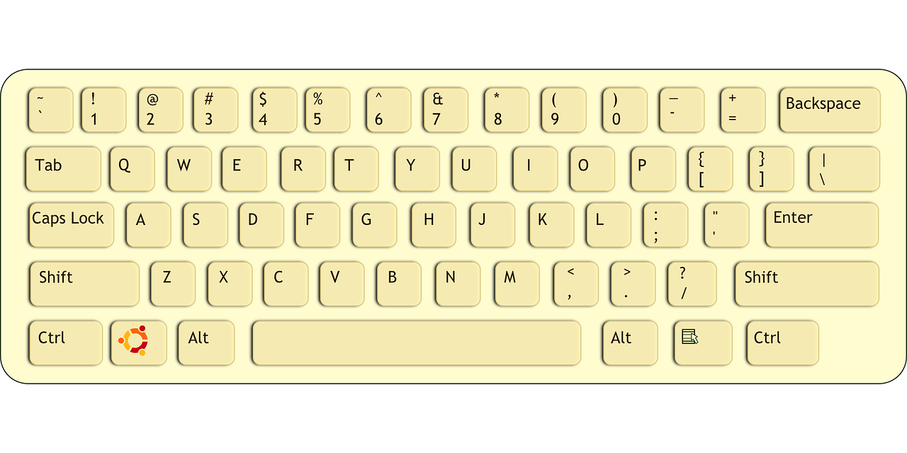

Finger Position, Home row, upper row, lower row, numeric, short-cut keys.
Finger Position on Keyboard
Below is a diagram of QWERTY layout keyboard. you should imagine this layout twice in a day. So you can remember position of all the characters(keys). in this diagram ASDFGHJKL is called Home Row. QWERTYUIOP is top row and ZXCVBNM<>? is bottom row. Space bar is pressed by thumb always. The rest side keys are commonly pressed by little finger.  Below is a table to teach you which finger is used for which key.
| Row/Finger | little finger | ring finger | middle finger | index finger | index finger | index finger | index finger | middle finger | ring finger | little finger |
|---|---|---|---|---|---|---|---|---|---|---|
| Top Row | q | w | e | r | t | y | u | i | o | p |
| Home Row | a | s | d | f | g | h | j | k | l | :; |
| Bottom Row | z | x | c | v | b | n | m | ,< | .> | /? |
Always when you start Typing, keep your finger on home row. your fingers should touch A S D F and J K L ; characters.
Home Row
In home row, you can easily press ASDF and JKL(;:) characters. But you have to press G and H also. Also there are ('") characters you have to press. To press G and H you have to move your fingers a little bit, but make sure to always return back at the default position. for example you are going to press G then your finger position should be like -
As explained above, the rest keys we press commonly with little finger. So to write ('") characters, you have to move your fingers a little bit, and press (' or shift+') with your little finger of right hand.
Top Row
Top row has QWER same as ASDF, TY same as GH and UIOP same as JKL; This row has square brackets and curly brackets in right hand side. So you have to press these keys by little finger of right hand. The important thing about other rows is that you should not move your all fingers on top or bottom row. your default finger position should be home row always. If you want to press keys of top row. you should move only required finger. For example to press E your finger postion should be like -
Bottom Row
It has ZXCV same as ASDF, BN same as GH and M(,<)(.>)(/?) same as JKL;. The good news is that this row has only 10 fingers. you should follow the same as explained in top row section.
Numeric Typing
In a keyboard there are 0-9 characters on the top of Top row. Also there is a special section in the right of keyboard especilly for numeric characters. you should always use top numeric row if numeric data is less. for example in story if you writing a year in numeric digits, you should not waste your time to move your hands on right of keyboard. you should press these numerics on top numeric row. Here 1234 is same as ASDF, 56 is same as GH and 7890 is same as JKL;
If you are working on a data, that is totally numeric, for example working on account numbers or mathematics calculations, you should prefer to use special numeric section of keyboard. It is easy to type digits using right numeric section of keyboard. You should use your right hand for it. your default position should be 4(index finger), 5 (middle finger) and 6 for ring finger. other characters should pressed with little finger of right hand. 0 is commonly pressed by thumb. Below is a table for keys with finger position.
| row/finger | index finger | middle finger | ring finger |
|---|---|---|---|
| Top row | 7 | 8 | 9 |
| Middle row | 4 | 5 | 6 |
| Bottom row | 1 | 2 | 3 |
Shift and Short-Cut Keys
Shift is used for writing upper case characters. shift is used with other characer like short-cut keys. capslock directly allow to type all the characters in upper case. But capslock has limited power. to type characters like {"}<>? you have to use shift. as a typist, you should learn and use shortcut keys also. it increase your work speed. On a keyboard, there are always two shift keys, so you can press it with both left and right hand. Commonly ctrl, shift is pressed by little finger and alt,window key is pressed by little finger or any other finger. This is a good practice to press these keys with free hand. Here free hand means if you pressing Shift+J then your right hand pressing J and left hand is free hand. So you should press shift with left hand and J with right hand. Another example - If you pressing Ctrl + S, it is suggested to press Ctrl with right hand and S with left hand.